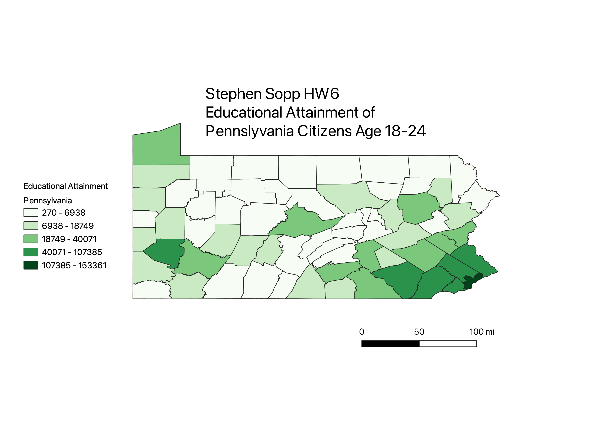

Homework 6: Census data choropleth
Stephen Sopp
My map is a representation of the educational distribution in the state of Pennsylvania. The state is broken up by county in order to use a gradient to show the range of values that a region has. I joined the data set that I obtained from the US Census Database. I found it interesting how the data gradient correlated with large cities within Pennsylvania.

Data used for this project
CSV dataset
Link to shapefile